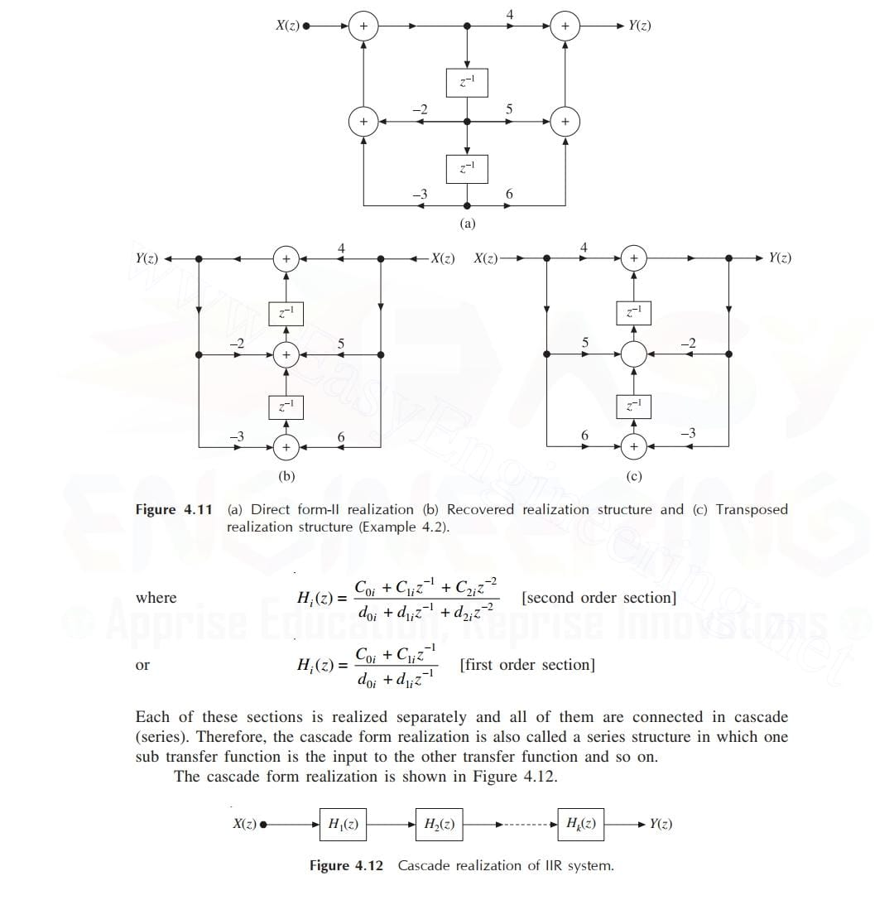

The cascade form structure is nothing, but a cascaded or series interconnection of the sub transfer functions or sub system functions which are realized by using the direct form structures (either direct form-I or direct form-II or a combination of both). Hence, in cascade form realization, the given transfer function H(z) is expressed as a product of a number of second order or first order sections
